Cantina Chichilo de Buenos Aires
"Una familia para servirlo"
Desde 1956.
Desde hace más de 68 años, al servicio del buen comer.
Atendidos por sus dueños en un barrio de famosos "La Paternal".
Elegidos por la producción POL-KA para la apertura de la novela Ilusiones y El sodero de mi vida.
El lugar preferido de Diego Maradona.
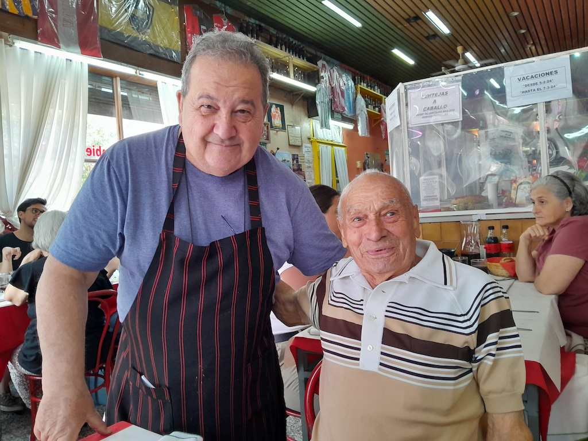
Nuestros Platos
-
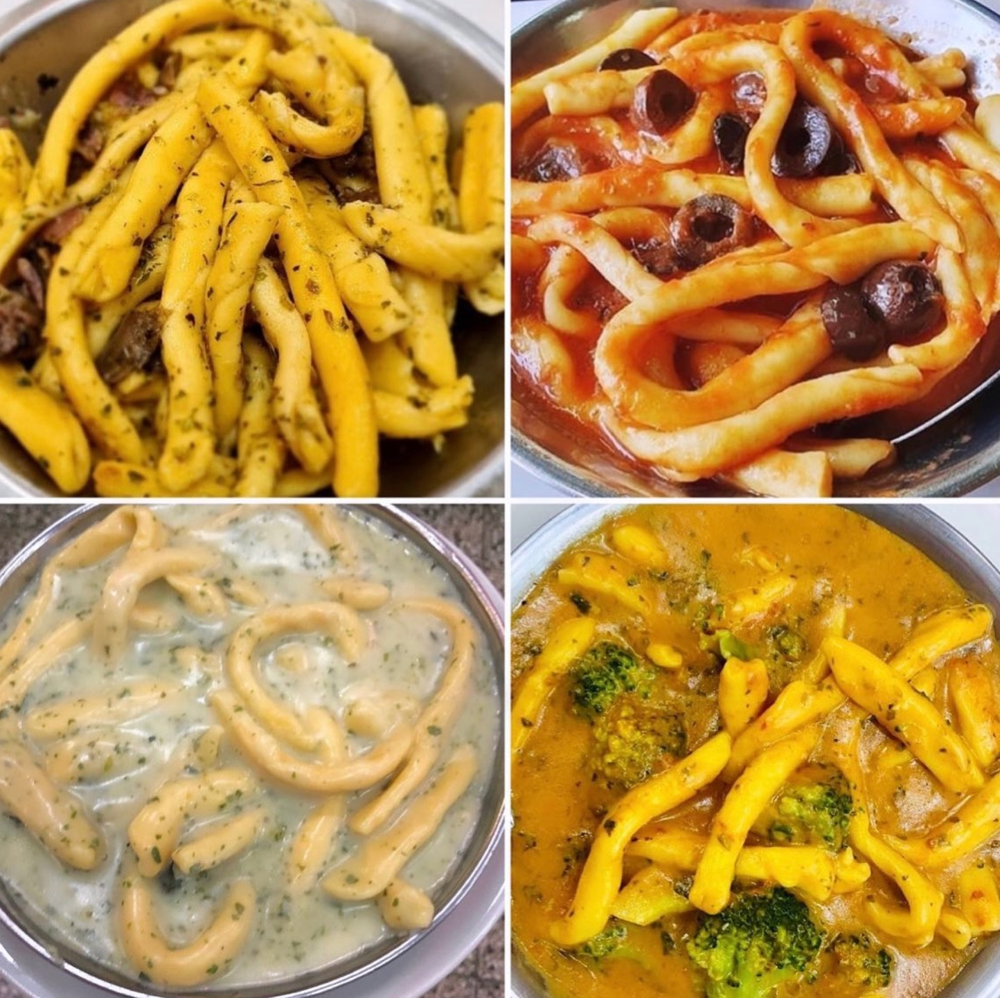
Nuestros Fusilli al fierrito
-
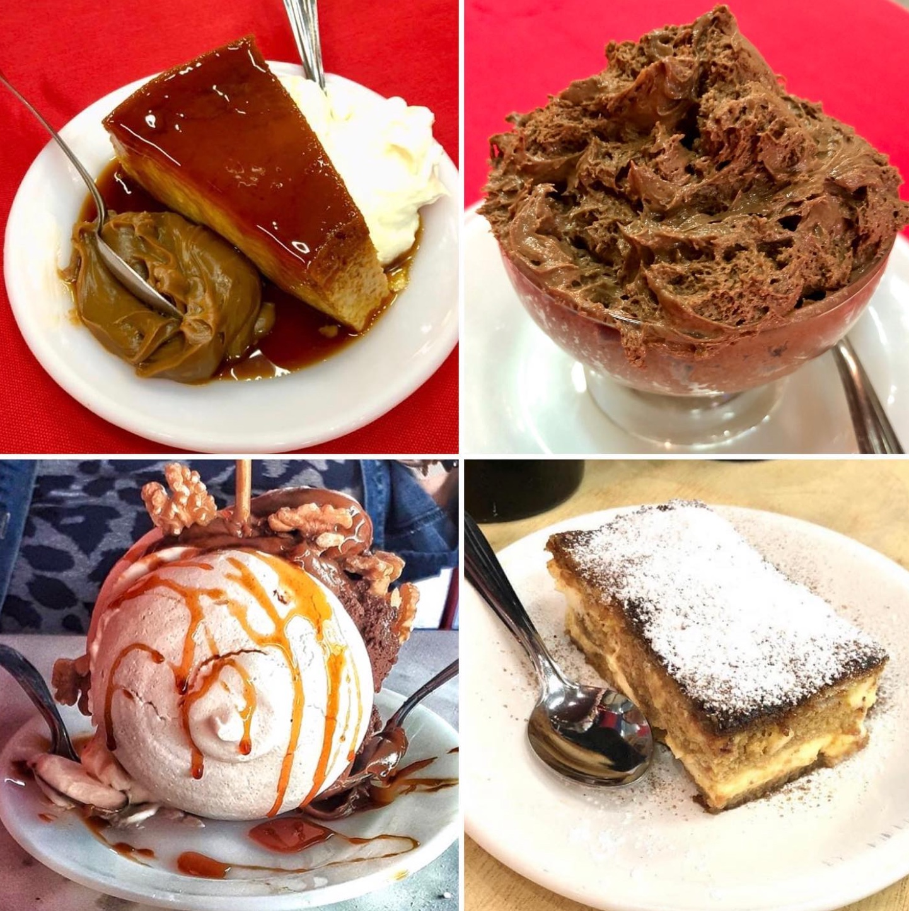
Los postres de Susana
-
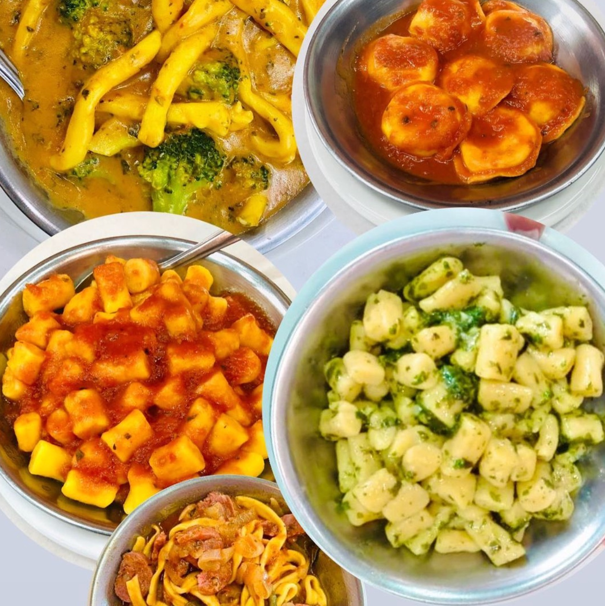
Nuestras pastas caseras
-
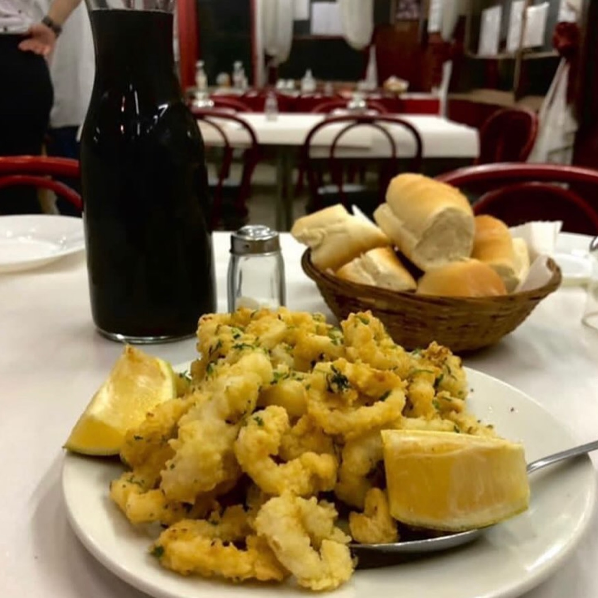
Rabas a la calabria
-
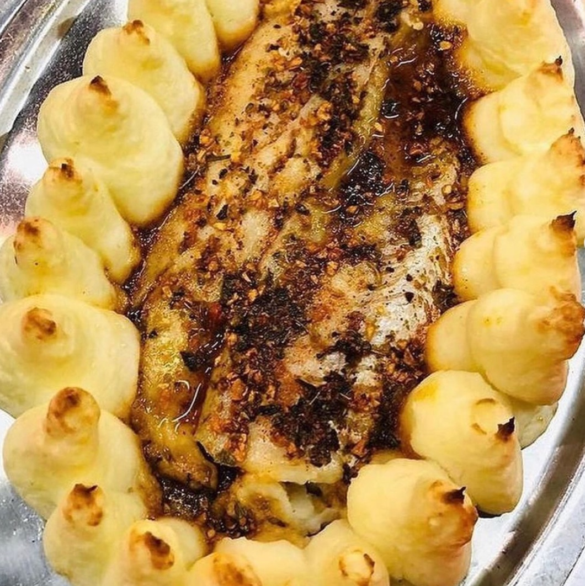
Gran variedad de pescados y mariscos
-
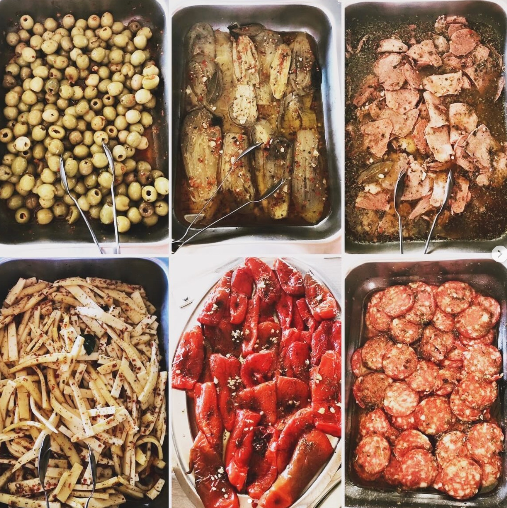
Parte de nuestro antipasto
-
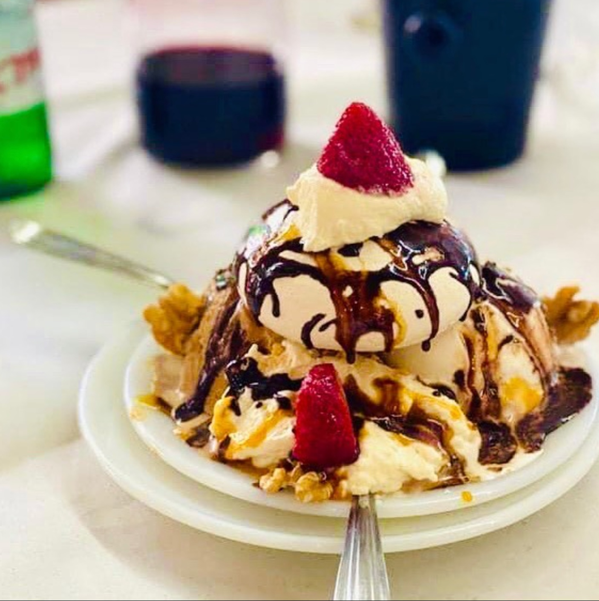
Nuestro postre Cicciolina
-
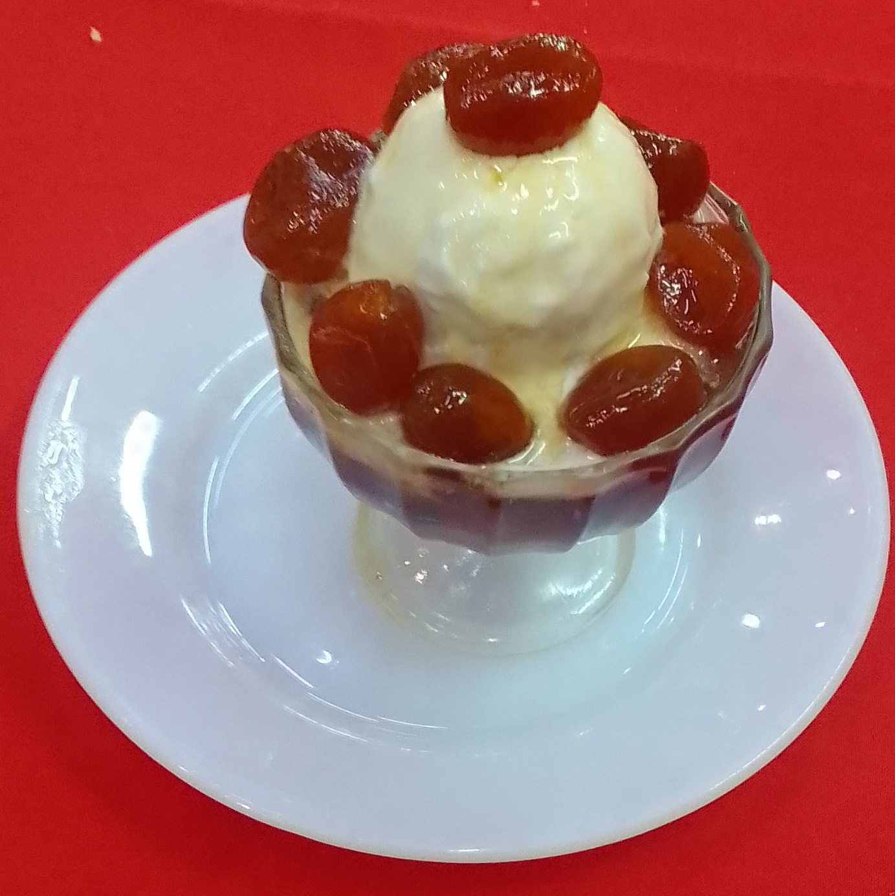
Quinotos Caseros al Rhum, con Helado
-
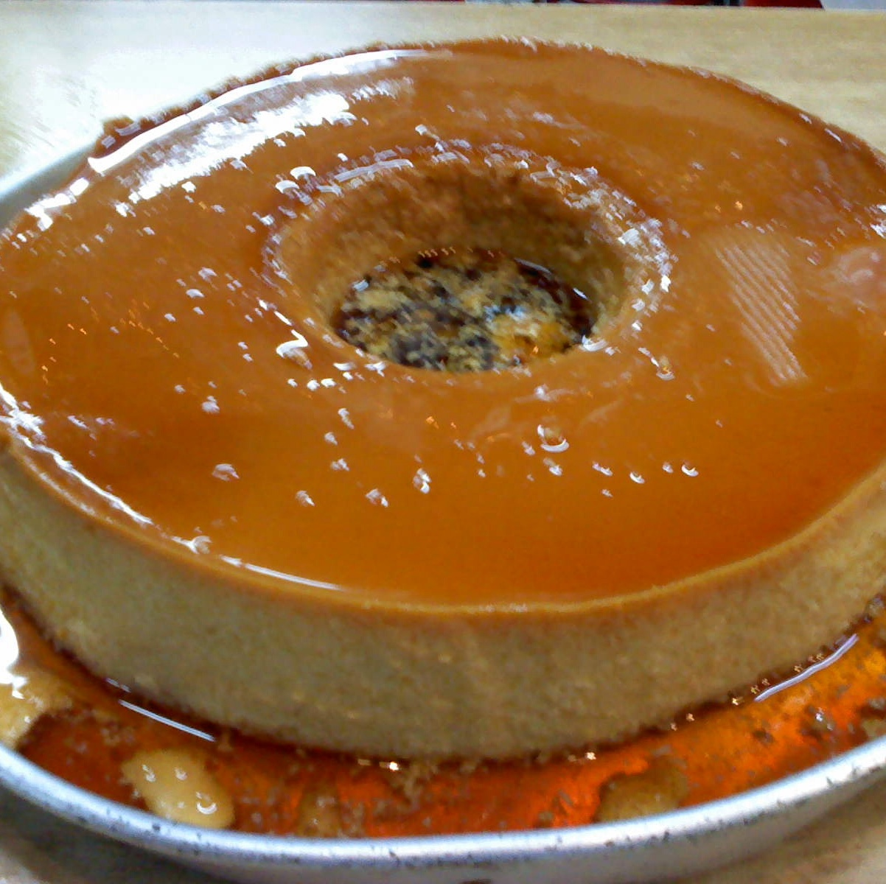
Flan casero
-
 La paella de Chichilo
La paella de Chichilo -
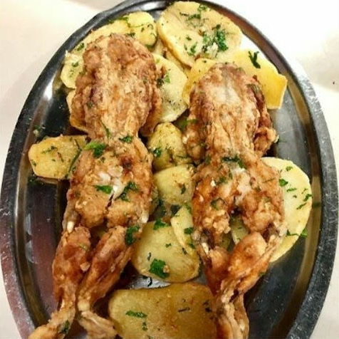
Ranas a la Provenzal
-
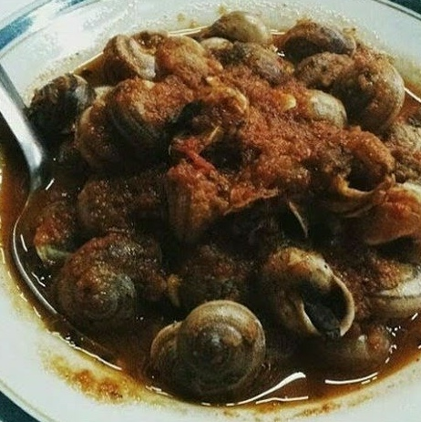
Caracoles a la Bordaleza
Horarios
Jueves a Sábados: 20:30 a 00:00 hrs
Sábados y Domingos: 12:30 a 14:30 hrs
Contacto
Dirección: Camarones 1901, esquina Terrero 2006, Capital Federal
Teléfono: +54-11-4584-1263 | +54-11-5020-0152
Email: chichilo3554@hotmail.com